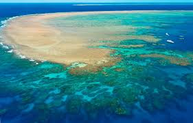
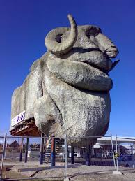
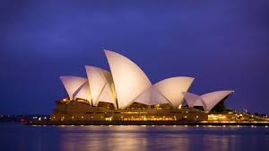

The Great Barrier Reef is one of the world’s most spectacular natural wonders, located off the coast of Queensland in northeastern Australia. Stretching over 2,300 kilometres, it is the largest coral reef system on Earth and can even be seen from space. Visitors can experience its incredible beauty by snorkeling or diving among vibrant coral, tropical fish, sea turtles, and other marine life. Popular access points include coastal cities like Cairns and Port Douglas, making it easy to explore this UNESCO World Heritage–listed destination. With its crystal-clear waters and rich biodiversity, the Great Barrier Reef is a must-see for nature lovers and adventure seekers alike.

The Big Merino, often called “The Big Sheep,” is one of Australia’s famous “big things” and a popular roadside attraction. Standing several metres tall, this giant statue celebrates Australia’s wool industry and can be found in the city of Goulburn. Visitors can explore a small museum inside and learn about the history of sheep farming while enjoying a fun and unique photo opportunity.

The Sydney Opera House is one of Australia’s most iconic landmarks, located on the edge of Sydney Harbour. Famous for its distinctive sail-like design, it hosts a wide range of performances including music, theatre, and dance. Visitors can take guided tours inside the building or simply enjoy the stunning waterfront views, making it a must-see destination for anyone visiting Sydney.
